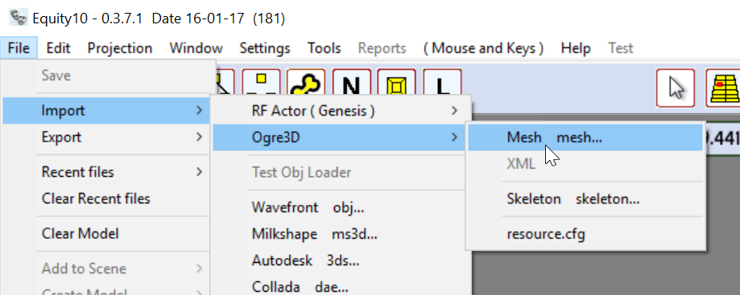
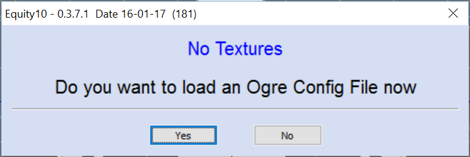
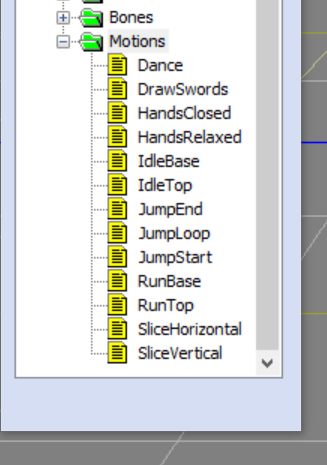
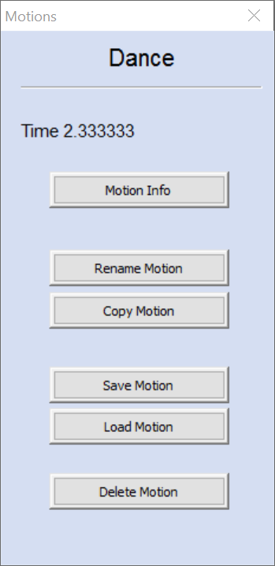

Ogre3D
Motion Renaming Deleting Coping Saving and Reloading .
Some times when using a
model in your game only a certain amount of animations are used this
has the affect of bloating your resources with unnecessary data.
As of version Equity10
0.3.7.1 Can now delete unwanted motions then the model can be
exported out with just the motions you want.
Also some motion don't
have the required names required for your game Equity can help out
and has the ability to rename motions it also can save motions that
can be reloaded later and motions can be cloned/copied. OK first off we will
use the Sinbad.mesh model and its motions as every one has this
model in the SDK. if for some reason you dont have the model just down load the model and models used to test Equity. https://sourceforge.net/projects/hgts123/files/Test_Models.zip/download
Start Equity and
navigate to File->Import->Ogre3D->Mesh 
Now navigate with the
Open dialog that appears to where your Model is. ( .mesh file )
When the model loads
you will be asked do you want to load a Resource File. 
You can click Yes and
navigate to the resources.cfg you are using in your game but for the
purposes of this tutorial it does not matter only the motions are
affected and non of the internal material references in the mesh file
are altered so you can click No Delete motions and Export then place the model
back into your game it will look exactly the same but with less or
renamed motions.

Ok now Double click on
the Motions Folder. As you can see a list
of motions appear in the case of Sinbad there are 13 Dance DrawSwords
and so on when you click on a Motion you will notice at the bottom
the Motion Control Panel its a bit limited at the moment but will
improve in future releases but there is a Play Stop and Pose Button.
The Pose Button always
returns the Model to the Default Pose this is the starting position
of the model with or without a motion you could say the default
skeleton in the case of Sinbad.
Ok now to the right the
motions manager is Active and with a set of Options.

The first and obvious
thing you will see is the name of the Motion Then Next is the Time
this is the total time of the Motion in seconds.
Ok the Buttons.
Motion Info
I am not going to go
into to much detail about this at the moment but click it and you
will see it brings up the motion details including its Paths and
Frames and the Times at which things happen in the Motion.
Rename Motion
Clicking this button
brings the Change Motion Name dialog. The name that appears in the
dialog is the current selected Motion name now if you click Ok Equity
will complain that a Motion by this name Exists so you will have to
alter it so in this example stick a 2 after Dance so Dance2 now click
Ok and the Motion name will change to Dance2. Also note that Motion
names can be funny about space so if you type Dance 2 Equity will
replace it with Dance_2.
Copy Motion
The Copy Motion Button
provides the ability to clone a Motion so in this Example when
clicked it will ask you again for a name if you type a 2 after Dance
Dance2 and click ok a New motion will be created now Dance2 will be
an Exact copy of Dance. This may seem an odd thing at the moment “why
do it” later in future releases we will be adding Motion Edit so
you can edit the motion and creating a copy then altering that seems
a safe thing to do.
Save Motion
This button will bring
up a Save dialog the save name is the model name plus the motion name
and mot so it stands out in a file system so in this case the file
will be sinbad_dance_mot.omf the omf file extension stands for Ogre
Motion File but of course you can name the file anything you want. Load Motion Load motion is the
counter part to Save motion when clicked it will bring up the load
dialog navigate to where you saved the omf file and it will load it
there are two things to note.
Note 1 If the file
being loaded as a motion name that already exists in the model Equity
will ask you to rename it on loading.
Note 2 you can not
just load any motion file say from ninja model to Sinbad model it
gets a bit involved but in a nut shell the skeleton as different
names for its joint/bones and a motion works on the motion by the
names of the joints in the case of sinbad they are described like Jaw
neck and so on but ninja is just joint1 joint2. If you try to load a
Motion file that does not match the model skeleton Equity will tell you and abort the
motion load.
Delete Motion
And Finally Delete
Motion ok this will delete the selected motion it is advised to save
the motion before deleting it just in case you want it back at a
later date for a new game.
You can keep deleting
motions till there are none the motion folder will go grey to add a
motion back just click the motion folder to bring back the Motion
Manager.
And Finaly
Ok now to save the changes to the model it will need to be Exported out so Navigate.
File->Export->Ogre3D->Mesh
The Export routine will
create a folder for you it will place the mesh and skeleton files also
a dummy material file and any textures used by the model .It should
only be nessary to copy the skeleton file to you game data.
We have many ideas in
the pipeline including bulk delete motions which will save time
deleting individual motion and a motion editor which will be able to
create/edit motions.
Thanks
W.T.Flanigan - H.C.Flanigan
|